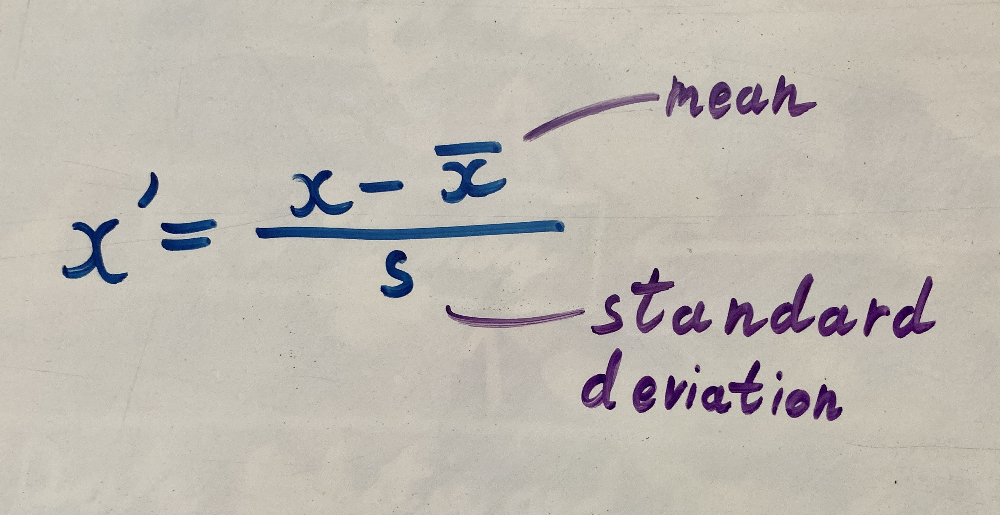
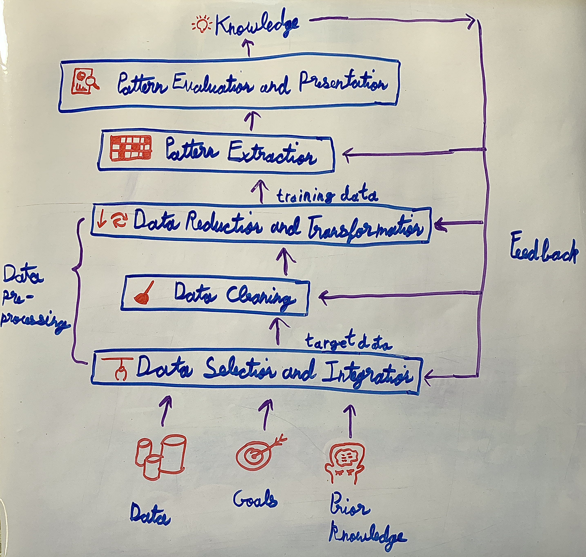
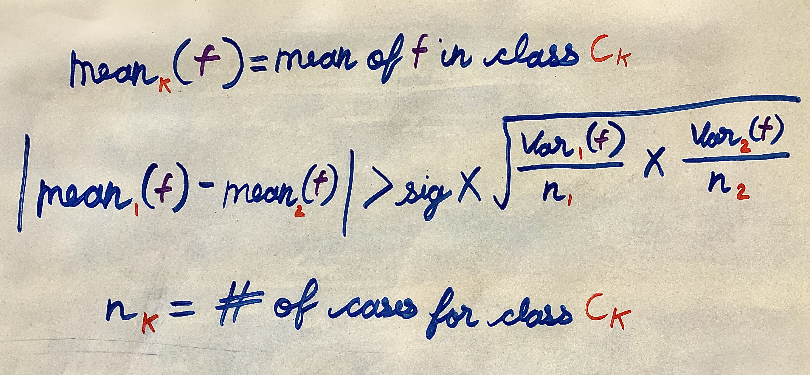
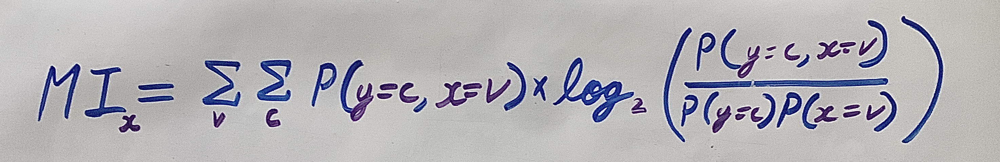
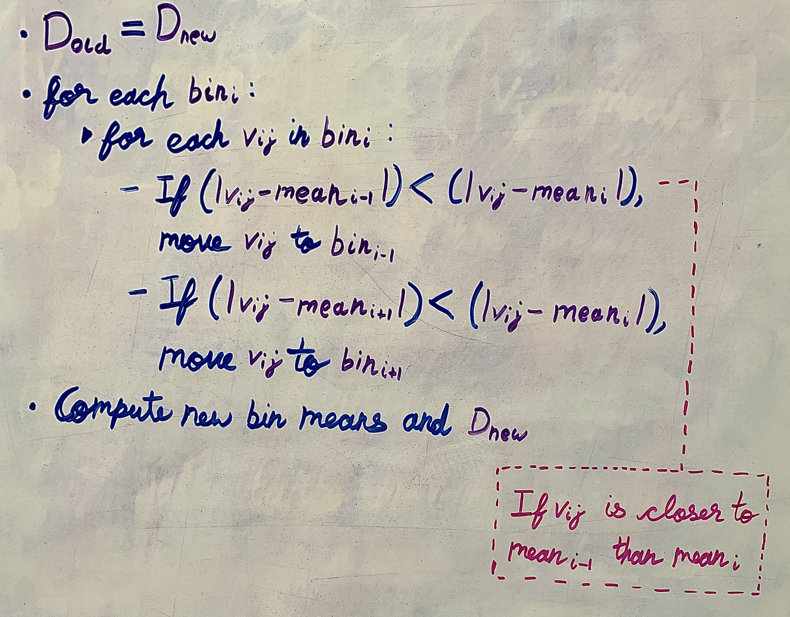
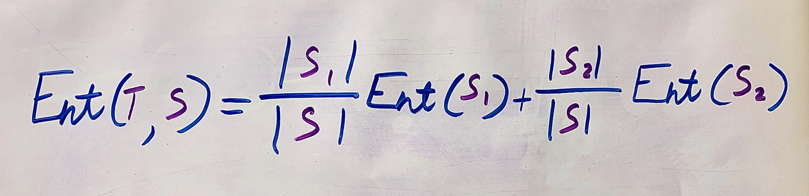

- Process of Data Mining and KDD:
- Why Data Preprocessing?
- Heterogeneous data - data integration
- Dirty data (Incomplete data, Noisy data, Discrepancies in codes or names) - data cleaning
- Data not in the right format - data transformation
- A huge amount of data - data reduction
- Data integration: combines data from multiple sources into a coherent store.
- Schema integration:
- Integrate metadata from different sources.
- Entity identification problem: identify real world entities from multiple data sources.
- How to Handle Missing Values?
- Fill in the missing value manually: tedious + infeasible?
- Fill it in with a value "unknown"
- Ignore the tuple containing missing values
- Global estimation
- The attribute mean/median for numeric attributes
- The most probable value for symbolic (i.e. categorical) attributes
- Local estimation: smarter
- The attribute mean/median for all the tuples belonging to the same class (for numeric attributes)
- The most probable value within the same class (for symbolic attributes)
- Use inference-based prediction techniques, such as nearest-neighbor estimator, decision tree, regression, neural network, etc.
- How to Handle Noisy Data?
- Clustering: detect and remove outliers (An outlier is a value that does not follow the general pattern of the rest).
- Regression: smooth by fitting the data into regression functions
- Binning method: first sort data and partition into bins, then one can smooth by bin means, smooth by bin median, smooth by bin boundaries, etc.
- Moving average: Use the arithmetic mean of neighborhood examples
- Combined computer and human inspection: detect suspicious values and check by human (e.g., deal with possible outliers)
- Normalization: scale attribute values to fall within a small, specified range:
- Min-max normalization, specifically, for range [0, 1]:
- Min-max normalization, generally, for range [cus_min (or custom_min), cus_max]:
- Z-score normalization:


- Data reduction operations:
- Feature reduction (reduce the number of columns)
- Case reduction (reduce the number of rows)
- Value reduction (reduce the number of distinct values in a column)
Case/Example Feature 1 Feature 2 Feature 3 Class E1 V11 V12 V13 C1 E2 V21 V22 V23 C2 E3 V31 V32 V33 C3 - Feature Selection:
- Objective: Find a subset of features with predictive performance comparable to the full set of features.
- A practical objective is to remove clearly extraneous features - leaving the table reduced to manageable dimensions - not necessarily to select the optimal subset.
- Feature Selection Methods:
- Merger Methods: merge features, resulting in a new set of fewer columns with new values.
- Wrapper Methods: feature selection is being "wrapper around" a learning algorithm. In wrapper methods, we try to use a subset of features and train a model using them. Based on the inferences that we draw from the previous model, we decide to add or remove features from your subset. The problem is essentially reduced to a search problem. These methods are usually computationally very expensive.
- Filter Methods: select a subset of original features
- Feature Selection from Means and Variances
- Compute the means of a feature for each class, normalized by the variances;
- If the means are far apart, interest in a feature increases (the feature has potential in terms of distinguishing between classes);
- If the means are indistinguishable, interest wanes in that feature.
- Two intuitive methods
- Independent feature analysis: Assuming the features are independent. Features are examined individually.
- Significance test (t-test):
- If the comparison fails the test, the feature can be deleted.
- A feature is retained if it is significant for at least one of the pairwise comparisons.

- Distance-based feature selection
- Independent feature analysis: Assuming the features are independent. Features are examined individually.
- Feature Selection by Mutual Information:
- Objective: Select features according to the mutual information between a feature and the class variable.
- The mutual information (also called information gain) between the class variable y and a discrete feature x:
- MI measures the degree to which x and y are not independent. The bigger the value, the more dependent y is on x.

- Feature Selection by Decision Trees
- Feature Selection from Means and Variances
- Methods for reducing values:
- For nominal attributes: Generalization
- For Integer or real-valued attributes: Rounding, Binning, Discretization
Data Reduction
Discretization
- K-mean Clustering: Distribute the values in the bins to minimize the average distance of a value from its bin mean:
- Sort the input values and keep the unique values
- Create k bins using equal-depth binning
- Compute bin means (mean1, mean2, ..., meank)
- Compute global distance: \(D_{new} = \sum_i \sum_j {(v_{ij}-mean_i)}^{2} \) where meani is the mean in bini and vij is the jth value in bini
- Repeat:
- Until Dnew is not less than Dold.

- Entropy-Based Discretization:
- Sort the examples in a set S by increasing values of the attribute A: {v1, v2, ..., vn}.
- Suppose a cut-point T partitions S into S1 and S2. Entropy (with respect to the class attribute) after the partition induced by cutpoint T:
- Select TA for which E (TA , S ) is minimal to split the range into two subranges.
- The process is recursively applied to partitions obtained until some stopping criterion is met.
